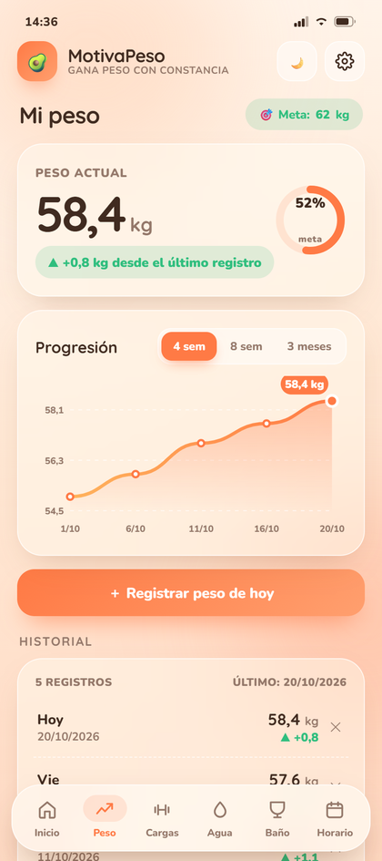
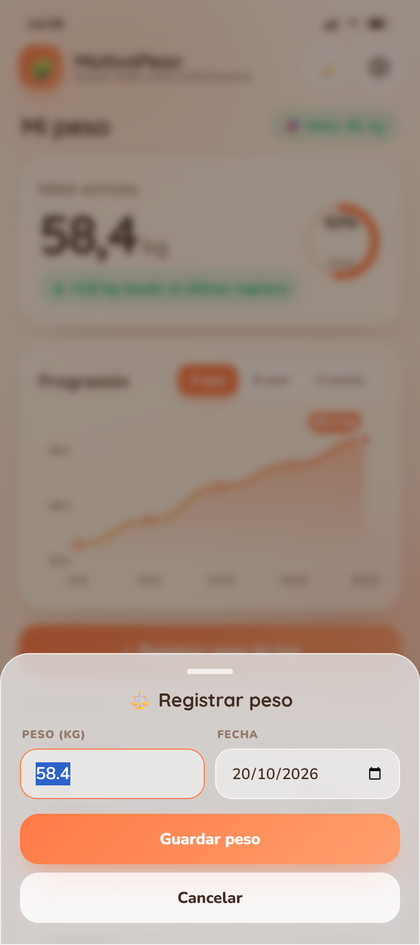
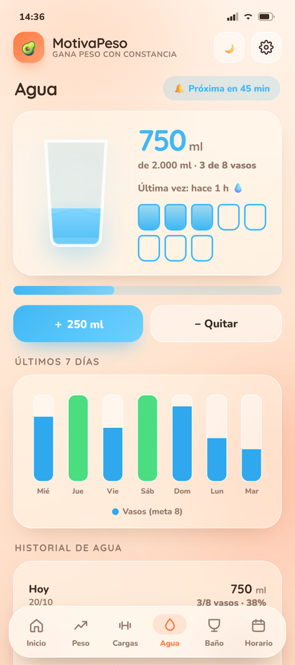

La 2.2 no trae adornos: corrige los bugs que hacían que el historial mintiera, se duplicara o guardara datos que nunca registraste. Y agrega el aviso de versión nueva dentro de la app.
Estos eran los fallos reales del historial, comprobados con datos corruptos y desordenados antes de tocar el código.
| Problema | Antes | Ahora |
|---|---|---|
| El botón "Registrar peso de hoy" | Inventaba un peso: sumaba entre 0,1 y 0,4 kg al azar y lo guardaba como medición real. | Abre una hoja para escribir el peso y elegir la fecha. Nunca inventa datos. |
| Orden del historial | Mostraba el último registro insertado, no el más reciente. El "peso actual" podía ser de hace semanas. | Se ordena por fecha al cargar y al guardar. El último es siempre el más reciente. |
| Duplicados y fechas rotas | Dos pesos del mismo día aparecían dos veces y una fecha inválida mostraba NaN/NaN. |
Se fusionan por fecha y se descartan los registros ilegibles. |
| Diferencia entre registros | Comparaba con el siguiente de la lista, no con la medición anterior en el tiempo. | El delta ahora es cronológico: siempre contra la medición previa. |
| Historial de agua | Solo abrir la app ya creaba el día con 0 vasos. Se duplicaban días y se desordenaba. | Solo guarda cuando registras o quitas un vaso. Ordenado, sin duplicados, hasta 60 días. |
| Cambio de día | Con la app abierta pasada la medianoche, los vasos de ayer se guardaban con la fecha de hoy. | Detecta el cambio de día y reinicia el contador sin copiar nada. |
| "Restablecer todo" | Borrándolo todo, el historial de agua quedaba intacto como días fantasma. | Limpia peso, agua, comidas, baño y preferencias de verdad. |
| Exportar | El botón no hacía nada en el APK: el puente nativo existía pero nadie lo llamaba. | El .txt se guarda en Descargas, como debía ser. |
Puedes anotar el peso de hoy o corregir el de un día pasado desde la misma hoja.
Doble toque en la ✕ del historial para eliminar una medición mal puesta.
Ajustes → Actualizaciones consulta GitHub y te ofrece el APK nuevo cuando exista.
Se eliminó la copia vieja del HTML que hacía que las compilaciones locales mostraran otra interfaz.
Capturas tomadas del HTML real, con datos de prueba desordenados a propósito.


